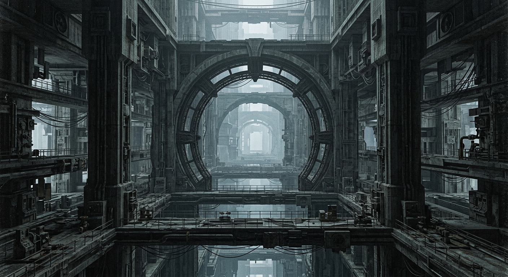

The Megastructure is Indifferent.
You are no hero. There are no heroes here — only those who keep the machine alive. In an endless path of concrete, survival is an engineering problem, and every human life is another part of the equation.
In a world that has outgrown its creators, Iron Strata is a high-stakes survival roguelike. You are the Commander of a moving fortress—a colossal, self-contained habitat designed to carry the last of our species through the procedurally generated depths of a dead civilization.
Success is measured in efficiency. You must balance the physical requirements of your crew with the mechanical demands of your fortress. Here, morality is secondary to the process of survival, and every decision is etched into the cold concrete of the abyss.

Master the spatial strategy of a deckbuilder. Attach specialized Wagons — Combat, Support, and Production — to your Locomotive in a three-dimensional layout where placement and synergy are everything.
Manage a micro-society where every passenger is unique. Balance food, rest, and medical care while monitoring stress levels in a world where loss is permanent.
Defend against the Megastructure's autonomous maintenance protocols. Face swarming Crawlers and massive Sentinels that view humanity as a system error.
Experience the staggering scale of a world inspired by Tsutomu Nihei. Journey through an infinite vertical labyrinth of raw concrete and forgotten machinery.
Scavenge for Scrap to upgrade your fortress, manage Rations to keep your crew alive, and gather Knowledge to unlock permanent progression.
Navigate a shifting network of cities — from intense combat zones to mysterious settlements — ensuring no two journeys are ever the same.